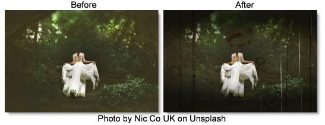

S_FilmDamage
Description
Simulates damaged film with many options, including dust, hairs, stains, scratches, flicker, and shake.
The S_FilmDamage filter comes from the Emmy award winning Boris FX Sapphire filter set.
Category
Film Lab.
Controls
Presets
To select a preset, pick one from the Presets window.
Time
The effect is advanced in time.
Grain Amp
Scales the amplitude of the film grain that is added to the result. Set this to 0 to disable all grain.
Grain Details
Grain Amp Red
Scales the red grain amplitude.
Grain Amp Green
Scales the green grain amplitude.
Grain Amp Blue.
Scales the blue grain amplitude. Note that grain is added and subtracted from the image, so for example, increasing Grain Amp Blue will amplify both the blue and yellow speckles.
Grain Amp Darks
The relative amount of grain applied to the darkest regions of the image per channel. This defaults to less than 1 because dark areas usually have less grain than midtones.
Grain Amp Brights
The relative amount of grain applied to the brightest regions of the image per channel. This defaults to 0 because bright areas usually have less grain than midtones. Note that highly saturated colors can be affected by both Grain Amp Darks and Grain Amp Brights because they are dark in some color channels and bright in others.
Grain Blur
The grain is smoothed by this amount. Increase for coarser grain.
Grain Blur Red
The relative blur amount for the red grain.
Grain Blur Green
The relative blur amount for the green grain.
Grain Blur Blue
The relative blur amount for the blue grain.
Grain Mono
When enabled, the same grain pattern is used for the red, green, and blue channels.
Color Correct
Saturation
Scales the color saturation. Increase for more intense colors. Set to 0 for monochrome.
Scale Lights
Scales the result by this gray value. Increase for a brighter result.
Offset Darks
Adds a gray value to the darker regions of the source. This can be negative to increase contrast.
Tint Lights
Scales the result by this color, thus tinting the lighter regions.
Tint Darks
Adds this color to the darker regions of the source.
Stain Density
The number of stains.
Stains Details
Stain Print
Relative density of stains on the print.
Stain Negative
Relative density of stains on the negative.
Stain Size
Scales the width and height of stains.
Vary Stain Size
Amount to vary the size from one stain to the next.
Stain Opacity
Scales the opacity of the stains.
Vary Stain Opacity
Amount to vary opacity from one stain to the next.
Vary Stain Brightness
Amount to vary brightness from one stain to the next.
Vary Stain Color
Amount of additional, random color variation for each stain. If this parameter is greater than zero, stain colors can vary outside the range defined by Stain Color1 and Stain Color2.
Stain Color1
Beginning of the range of colors for stains.
Stain Color2
End of the range of colors for stains. Each stain will have a random color between Stain Color1 and Stain Color2.
Dust Density
The number of dust elements.
Dust Details
Dust On Print
Relative density of dust on the print.
Dust On Negative
Relative density of dust on the negative.
Dust Size
Scales the width and height of dust.
Vary Dust Size
Amount to vary the size from one piece of dust to the next.
Dust Opacity
Scales the opacity of the dust.
Vary Dust Opacity
Amount to vary opacity from one piece of dust to the next.
Vary Dust Brightness
Amount to vary brightness from one piece of dust to the next.
Vary Dust Color
Amount of additional, random color variation for each piece of dust. If this parameter is greater than zero, dust colors can vary outside the range defined by Dust Color1 and Dust Color2.
Dust Color1
Beginning of the range of colors for dust.
Dust Color2
End of the range of colors for dust. Each piece of dust will have a random color between Dust Color1 and Dust Color2.
Hairs
The number of hairs.
Hair Details
Hair Wiggle Amp
Controls the amount of random movement and stretching that each hair exhibits.
Hair Opacity
Scales the opacity of the hairs.
Hair Size
Scales the width and height of the hairs.
Vary Hair Size
Amount to vary the size from one hair to the next.
Hair Color
The color of the hairs.
Scratches
The number of scratches.
Scratches Details
Black Scratches
Number of black scratches, relative to the Scratches parameter value.
White Scratches
Number of white scratches, relative to the Scratches parameter value.
Black Scratch Length
The length of the black scratches.
White Scratch Length
The length of the white scratches.
Scratch Width
Width of the average scratch, in approximate NTSC−sized pixels.
Vary Scratches Width
If this is 0, all the scratches will be the same width. Increase to let each scratch have its own width.
Scratches Taper
Controls the pointiness of the ends of each scratch. A larger value makes a longer taper on each end.
Scratch Opacity
Maximum opacity of the scratches. Setting this to 0 will fade the scratches out.
Scratch Roughness
Amount to roughen the edges of each scratch to simulate the random character of a real scratch.
Scratch Rough Freq
Sets the frequency of the roughness on the scratch edges.
Gaps
Like real analog scratches, the dust particle creating the scratch sometimes rolls around and the scratch skips. This controls how much that happens.
Gaps Freq
The frequency of the scratch gaps.
Scratch Area Center
The center coordinate of the area of the screen covered by the scratches. 0 is in the middle of the screen, −1 is the left edge, and 1 is the right edge.
Scratch Area Width
The width of the area of the screen covered by scratches. 1 means the scratches cover the full screen area. To produce scratches only in one strip, adjust the Scratch Area Width smaller.
Vignette Darkness
Vignetting is darkening of the image towards the corners and sides of the image. This parameter controls how much the outer corners of the screen should be darkened or vignetted. 0 produces no vignetting, while a value of 1 creates maximum darkening.
Vignette Details
Vignette Radius
Distance from the center to apply the vignette.
Vignette Edge Softness
The width of the vignette's soft edge. Larger values give softer, less visible edges.
Vignette Rel Height
Controls the aspect ratio of the vignette ellipse. This should normally be set to the aspect ratio of the image.
Seed
Used to initialize the random number generator. The actual seed value is not significant, but different seeds produce different results and the same value should give a repeatable result.